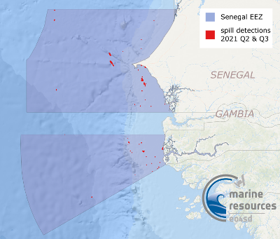
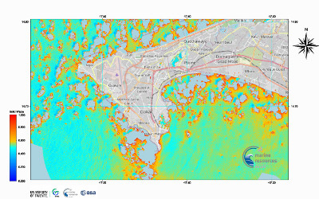
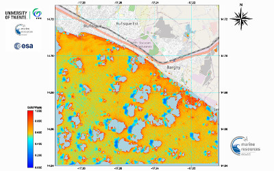

| Title | Quicklook | Description | Place | Time Period of Content | Download |
|---|---|---|---|---|---|
| Water quality for large geographical regions |
(535 KB) |
Example of a Chl-a map for West Africa | Mauritania/Senegal Atlantic Ocean |
Feb. 28, 2020 | Example in GIS portal User Guide (PDF, 2.1 MB) |
| Senegal, Oil Spill Detection Service |  (270 KB) |
Oil Spill Detection maps include oil spill vector data and the backscatter coefficient SAR images of Senegal. The data are provided in Google Maps KML format. | Senegal | 2016-2021 | Oil Spill Detection vector data 2016-2021 (KML, 45 KB) Metadata (XML, 3.9KB) |
| Senegal Historical Shorelines, Shoreline Change Rates (2000-2020) and 10- and 20-year forecast - Version 1 | (831 KB) |
Version 1 - Unvalidated and occasional mis co-registration between shorelines from Landsat and Sentinel imagery which can skew change rates.This layer consists of data used to map shoreline change rates in Senegal produced by the National Oceanopgrahy Centre for the Marine and Coastal Resources project under the initiative Earth Observation for Sustainable Development (EO4SD) by the European Space Agency. Geodatabase contains: Admin boundary - administrative boundary of coastline Senegal Shorelines - Each shoreline delineated from the 20-year period Forecast 10 [years] Forecast 20 [years] Forecast Uncertainty 10 [years] Forecast Uncertainty 20 [years] Shoreline change rates - transects Historical shorelines between 2000-2020 can be visualised, created by annual median composites of Landat 7, 8 and Sentinel 2 imagery which delineates the approximate mean high water mark. Methods are inspired by Coastsat, a Google Earth Engine-enabled open-source software toolkit that delineates shorelines at any sandy coastline worldwide from over 30 years of publicly available satellite imagery (https://github.com/kvos/CoastSat). |
Senegal | 2000 - 2020 |
Shapefiles (ZIP, 14 MB) GDB file (ZIP, 7.2 MB) Metadata (XML, 8KB) |
| Land-based pollution 2019-2020 (1000m from shoreline). Service - Land-based pollution |  |
Land-based pollution of suspended and dissolved waste.Based on Sentinel-2 MSI images level 2A. The calculations are performed for a buffer about 1000 m off shore. Covering the area for the last 12 months period between 2019 and 2020. |
Dakar | 20190101 - 20201231 |
Timeseries quicklooks (ZIP, 5.4 MB) GeoTIFFs (ZIP, 22.8 MB) Metadata (XML, 4.7 KB) |
| Land-based pollution 2019-2020 (1000m from shoreline). Service - Land-based pollution |  |
Land-based pollution of suspended and dissolved waste.Based on Sentinel-2 MSI images level 2A. The calculations are performed for a buffer about 1000 m off shore. Covering the area for the last 12 months period between 2019 and 2020. |
Rufisque | 20190101 - 20201231 |
Timeseries quicklooks (ZIP, 3.4 MB) GeoTIFFs (ZIP, 585.2 KB) Metadata (XML, 4.7 KB) |
| Landcover Map of Senegal Casamance Area (2020) | (948 KB) |
Senegal Casamance area land cover classification data (2020) produced by Brockmann Consult GmbH for the Marine and Coastal Resources project. |
Senegal Casamance | 2020 |
Raster file (ZIP, 10.6 MB) Metadata (XML, 4 KB) |
| Landcover Map of Senegal Saloum Area (2020) | (476 KB) |
Senegal Saloum area land cover classification data (2020) produced by Brockmann Consult GmbH for the Marine and Coastal Resources project. |
Senegal Saloum | 2020 |
Raster file (ZIP, 11.3 MB) Metadata (XML, 5.1 KB) |